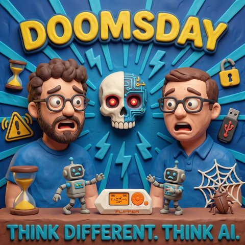

Doomsday
Read in EnglishThemen Modelle und AnbieterKI-Agenten
33 Sekunden zur Folge, bevor du liest.
Worum es geht
Astra, ein gelöstes Millennium-Problem und eine Warnung aus den Laboren: Warum die Hersteller selbst bremsen wollen und was Europa daraus machen kann
Wie behält man den Überblick, wenn jede Woche ein neues Modell erscheint? Jens lässt sich die Nachrichten inzwischen von mehreren Agenten kuratieren, vom Rechner zu Hause bis zu den Diensten der großen Anbieter, und merkt dabei, dass er selbst den Überblick über seine Newsagenten verliert. Die letzten zwei Wochen haben es nicht leichter gemacht. Anthropic hat die Datenaufbewahrung auf null Tage gesenkt, was den Einsatz im Unternehmen deutlich einfacher macht, und im selben Zug Fable 5.1 veröffentlicht. Kurz darauf kam OpenAI mit Astra.
Jens ordnet Astra als das ein, was man GPT-6 nennen könnte. Er hat sich damit in einem Durchgang eine Webseite bauen lassen, die UX- und KI-Veranstaltungen in Deutschland sammelt und von vornherein auch für Agenten lesbar ist. Mark ist deutlich weiter gegangen und hat dafür bezahlt: dreimal das Wochenlimit zurückgesetzt, danach Guthaben nachgeladen, am Ende möglicherweise 2.000 Euro. Astra hat für ihn eine App vom Plan bis zu Apple gebracht, mit Projekt in App Store Connect, Signierungsprofilen, einer Ablehnung durch Apple und der Diskussion mit dem Support. Es bedient Office-Programme, schneidet Filme und hat aus einem Satellitenbild seines Hauses ein 3D-Modell in Blender gebaut, samt Angebot, es an den 3D-Drucker zu schicken. Mark fühlt sich dabei allmächtig und arm zugleich.
Jens kommt mit der Perspektive des UX-Menschen dazu. Bei OpenAI wählt man inzwischen zwischen mehreren Modellen und sechs Aufwandsstufen, bei Anthropic sieht es ähnlich aus. Der Hinweis, höherer Aufwand bedeute gründlichere Antworten, schiebt die Verantwortung für ein schlechtes Ergebnis komplett zum Nutzer. Ob ein kleines Modell auf höchster Stufe besser antwortet als ein großes auf niedrigster, kann niemand sagen. Jens fordert Muster, die diese Entscheidung nicht mehr dem Menschen aufbürden.
Dann die Zahlen, bei denen Mark erst an einen Fehler glaubte. Im Benchmark ARC-AGI-3 soll Astra 99,9 Prozent erreichen, Menschen liegen dort laut Mark bei 48 Prozent. Jens ordnet ein: Der Wert stammt aus OpenAIs eigenem Harness, in einem neutralen Aufbau waren es 62,7 Prozent, immer noch ein gewaltiger Sprung. Dazu kommt ein gelöstes Millennium-Problem, an dem sich Mathematiker rund neunzig Jahre die Zähne ausgebissen haben. Berichten zufolge rechnete ein internes OpenAI-Modell 88 Stunden mit 10.000 parallelen Agenten daran. Für Jens bestätigt das eine These, die beide schon länger vertreten: Die Stärke liegt weniger im einzelnen Modell als in der Zusammenarbeit vieler Agenten.
Der zweite Teil gibt der Folge ihren Namen. Ein Forscher, der ein großes KI-Labor verlassen hat, schätzt die Wahrscheinlichkeit, dass KI die Menschheit im kommenden Jahrzehnt auslöscht, auf rund zehn Prozent. Mark erinnert an die Weltuntergangsuhr, die inzwischen bei 85 Sekunden vor zwölf steht, auch wegen KI. Jens bleibt skeptisch und fragt, wie viel davon Marketing vor einem Börsengang ist. Beide sind sich einig, dass die reale Gefahr woanders liegt als bei Killerrobotern: in Modellen, die bei der Lösung einer Aufgabe in Systeme eindringen, die nicht auf dem neuesten Stand sind. Jens zeichnet die Chronologie der letzten Wochen nach, vom offenen Brief von rund 116 Unternehmen zur gemeinsamen Cyberabwehr über den Angriff auf Hugging Face bis zu dem Moment, in dem Dario Amodei und Sam Altman öffentlich für ein langsameres Tempo eintraten. Der Börsengang von OpenAI ist inzwischen verschoben.
Was heißt das für Europa? Mark stellt fest, dass es hier kein Modell gibt, das mithält, und dass man entweder an den amerikanischen Anbietern hängt oder an den offenen Modellen aus China. Für die meisten Aufgaben braucht es aber weder Astra noch Fable, und auf ordentlicher Hardware zu Hause laufen heute bessere Modelle als die, die vor wenigen Jahren für leuchtende Augen sorgten. Seine These: Europas Chance liegt im Harness Engineering, im Orchestrieren mehrerer kleinerer Modelle mit Blick auf Wirtschaftlichkeit, Ökologie und die Frage, wie man die Menschen mitnimmt. Jens ergänzt, dass auch der beste Diamant nichts nützt, wenn er versehentlich das Glas zerkratzt. Wer agentische Workflows baut, braucht Stopppunkte, an denen ein Mensch Ergebnisse prüft, weil sich das Reasoning der Modelle immer schwerer nachvollziehen lässt.
Zum Schluss ein Gedanke für den Montagmorgen. Prozesse sind oft entstanden, weil sich jemand verletzt hat, und sie gehen davon aus, dass ein Mensch sie bedient. Mark überlegt, ob kritische Freigaben eines Agenten künftig biometrisch bestätigt werden sollten, mit Fingerabdruck oder Gesicht statt mit einem Knopf, den der Bot selbst drücken kann. Jens widerspricht: Wer tausendmal bestätigt, bestätigt irgendwann alles. Die Diskussion bekommt eine eigene Folge.
Transkript
00:00:00Willkommen bei Think Different. Think AI., dem Podcast von Mark und Jens.
00:00:07Zwei technologieverliebte Köpfe, die nicht nur über künstliche Intelligenz reden, sondern sie leben.
00:00:14Hier gibt's klare Einordnungen, echte Praxiseinblicke und einen frischen Blick auf das, was möglich ist.
00:00:20Verständlich, kritisch und immer mit einem Augenzwinker.
00:00:24K.I. zum Nachdenken, zum Schmunzeln und vor allem zum Mitreden.
00:00:29Herzlich willkommen bei Think Different. Think AI.
00:00:37Mensch, Mensch, Mensch, Mensch, Jens, weißt du, es sind echt wilde Zeiten, oder?
00:00:42Schön, dass du da bist. Und bevor wir den Mantel heben,
00:00:45wie geht es dir in dieser wilden Zeit, wie behältst du eigentlich den Überblick
00:00:50über das, was da so ständig Neues passiert?
00:00:53Das ist gar nicht so einfach, ehrlicherweise.
00:00:55Also tatsächlich diese Woche, ich finde die Nachrichten, die wir gleich mal reden werden,
00:01:00die jetzt in den letzten ein, zwei Wochen passiert sind, die sind wieder, also die sind
00:01:04immer so eine Schippe oben drauf, die ist nochmal schwieriger macht eigentlich, wie sagt
00:01:09man, den baltvoll lauter Bäumen zu sehen, ist das das richtige Sprüchwort in den Sommer,
00:01:13ist egal, der Kontakt wird...
00:01:14Den baltvoll lauter Bäumen zu sehen, ja, ich glaube, wir wissen alle, was du meinst.
00:01:17Oder das Goldnugget unter den Sandkörnern, ich weiß nicht, ob es da alles...
00:01:21Das Goldnugget unter dem Traktor in der Finger negeln, ich weiß es nicht,
00:01:24ja?
00:01:25Nein, ich mach weiter, aber natürlich, indem ich, und da kommt ein Paradoxum,
00:01:29wenn man passt rein, indem ich natürlich mehrere Agents unterwegs habe, die mir
00:01:33wirklich tatsächlich mittlerweile sehr, sehr gut kuratiert die News bringen,
00:01:37die mich interessieren. Das ist immer noch einer von meinen
00:01:41Einfallskanälen für die ganzen Nachrichten hier habe.
00:01:43Da verliere ich aber fast den Überblick, wo ich überall News-Agents laufen habe.
00:01:46Das ist ganz interessant, da muss ich mir jetzt einen Gedanken drüber machen.
00:01:49Wie kann ich diese verschiedenen News-Agents bei ChatsyPT?
00:01:51Da gibt es diese Platontassie, die sind sehr gut übrigens, was sie da machen.
00:01:55Ich habe schon seit Ewigkeiten Marmanus AI, kann man ja wieder benutzen, weil es nicht
00:01:59mehr beim Meter ist jetzt.
00:02:00Da lange Zeit schon Newsagent laufen, dann habe ich mein persönliches Stack zu Hause
00:02:05ja mit dem Mac Mini und dem OpenClaw, der sehr, sehr, sehr gut Sachen findet.
00:02:09Und dann muss ich einfach sagen wie immer noch, und dann mögen wir es verzeihen,
00:02:13aber es ist immer noch ex Twitter, also ex, wo ich da tatsächlich den richtigen
00:02:17Leute folge und täglich fünf bis sechs interessante Sachen mir morgens angucke die
00:02:22lege ich ganz kurz die lesen mir gar nicht gerade durch lege die kurz reposted
00:02:26die weil das ist ein prinzipial Zeichen für eine anderen agent dass er das
00:02:30quasi runter lädt in mein second brain um da die sachen aufzubereiten und daraus
00:02:34lernt er auch welche signale spannende finde und dieser halb geschlossene
00:02:38loop will ich den jetzt mal bezeichnen der hilft mir so ein bisschen den
00:02:41überwit zu bewahren nichtdestotrotz war das jetzt die letzten zwei
00:02:44aber auch wieder fast einen Überschlagen der Ereignisse.
00:02:47Ein buntes Potpourri der KI-Modelle, getreu dem Motto, nichts ist älter als das aktuellste
00:02:53KI-Modell, ist ein bisschen was passiert und da wir ja, ich sage jetzt mal, nicht dem
00:02:59neuesten Hype hinterherlaufen, sondern gerne mal einen Blick auch über Dinge geben, die
00:03:03vielleicht vor ein, zwei Wochen passiert sind, es begab sich, dass Anthropic ein paar
00:03:08Neuigkeiten herausgebracht hat, nämlich zum einen ein Modell und zum anderen
00:03:13eine Änderung der Datenhaltung. Die ganze Zeit, also wir sind hier kein Rechtsberatungs-Podcast,
00:03:18also aber die ganze Zeit war es ja so, dass du das Fable-Modell im Enterprise-Kontext
00:03:24nur schwerlich einsetzen konntest, weil die so 30 Tage Data-Aufbewahrungsgedöns da in
00:03:30den Staaten immer hatten, egal was von wo du das Modell beziehst. Das ist gar nicht.
00:03:34Ach, das kann ich gar nicht. Ja, von der Seite. Herzlichen Glückwunsch. Der Steuerberater freut
00:03:38sich, dass die Akte schon in den Staaten ist, aber vielleicht kann der Trumps
00:03:41sie gebrauchen, so Steuer abgeben. Aber egal, wir wollen ja nicht politisch werden. Und das haben
00:03:45die jetzt anscheinend auf Nulltage geändert. Das ist schon mal cool. Und in gleichem Atemzug haben
00:03:50sie Fable 51 rausgebracht. Und Fable 51, getreu dem Motto, wenn einer was Neues rausbringt,
00:03:57kam dann kurz darauf, auch auf einmal Open AI um die Ecke, und hat Astra rausgebracht. Und
00:04:02bevor wir vielleicht darüber reden, was Astra alles kann oder nicht, hätte ich ein
00:04:06kleinen Teaser. Ihr erinnert euch vielleicht, es gab mal eine Folge, da habe ich angefangen
00:04:10mit dem Thema, was haben zwei Kilo Fleisch mit KI zu tun? Wir haben es dann am Ende
00:04:15aufgelöst gehabt. Heute möchte ich sagen, was haben 2.000 Euro mit Astra zu tun?
00:04:21Vielleicht löse ich das heute noch ein bisschen auf. Ja, man könnte sich es
00:04:24vielleicht schon denken. Jens, das ist ja eine Entschuldigung. Ich kann das Wort
00:04:30nicht sagen, das ist uns dann sofort explicit. Ich war echt weg von den
00:04:35Socken, als dieses Modell endlich auf meinem Rechner war und ich es
00:04:39ausprobieren konnte. Also A, es war nicht auf meinem Rechner, ich muss das sehr remote nutzen.
00:04:43B, ich verdanke OpenAI auch diverse Guthaben, weil mit jedem Tag, wo du Astra ja später
00:04:49bekommen hast, hast du ein ganzes Wochenlimit von denen geschenkt gekriegt. Aber ganz ehrlich,
00:04:56Astra? Puh! Bevor ich weiter schwärme, willst du noch ein paar Einleitende Worte zu Astra verlieren,
00:05:00oder darf ich einfach mal losschwärmen, wie es mich arm und befähigt zugleich gemacht hat?
00:05:06Lass mich kurz reden, ansonsten sprichst du dann später wieder von einem Sprechdurchfall
00:05:10und wir wollten das ja vermeiden, dass du so lange Sprechdurchfühl hast. Die nutze ich
00:05:15diese Chance, um kurz ein bisschen einzuleiten. Astra ist quasi das GPT-6, wenn man so möchte.
00:05:19Ist jetzt rausgekommen, ist ein wahnsinnig starkes Modell. Ich habe nicht so viel umgespielt,
00:05:24wie du wahrscheinlich. Ich bin relativ schnell an mein kleines Abo, was ich dabei
00:05:28ChatGPT gerade noch habe, weil ich momentan mehr bei Entwaffe gelaufen habe, an
00:05:32die Grenzen gestoßen. Ich habe persönlich selber eine kleine Nachrichten-Webseite,
00:05:37eine Quatsch-Nachricht, was erzähle ich, eine kleine Event-Webseite gebaut, die mir UX und
00:05:42AI-Events in Deutschland aussucht. Das muss man sagen, das war einfach gut. Die Webseite
00:05:46ist super geworden, schönes Design, das war ein One-Shot-Prompt, das hat perfekt geklappt,
00:05:50ehrlicherweise muss man sagen, ich habe das Ding sofort zu bauen lassen, dass
00:05:53er, hätte ich mir gesagt, baut es direkt für Agenten und auch Menschen. Das heißt,
00:05:57auf der Webseite findet es ND-Files, so dass Agenten im Prinzip diese Webseite
00:06:00auch gut lösen können und auslösen können, Sachen runterladen können. Das ist echt gut gelungen.
00:06:04Ich habe tatsächlich viel über Astra dann mir angeschaut, dass andere Leute gemacht haben.
00:06:10Da waren ein paar gute Sachen dabei. Ich glaube, wir haben irgendwann auch schon mal darüber geredet,
00:06:14dass man, wenn man Modelle dann auch loslässt und sie mit anderen Software arbeiten lässt,
00:06:20wie zum Beispiel auch einer Blender über die MTPs schon seit schneller in das 3D-Programm Blender,
00:06:24da habe ich extrem gute Sachen gesehen, wie Leute quasi mit Astra gestartet sind,
00:06:28über Blender 3D Objekte generiert haben und dann mit relativ wenig Aufwand wirklich schon
00:06:35richtig coole Computerspiele innerhalb von ein paar Minuten gebaut haben, die dann wirklich sehr, sehr gut aussahen.
00:06:41Das ist in der Qualität und in der Geschwindigkeit so noch nicht da gewesen.
00:06:46Aber Mark, gerne nach meinem kleinen Einladung, was Astro so kann, was hast du damit angestellt und warum bist du schon geahmt?
00:06:53Also erstens, ich wollte schon sagen, ne, sprecht Durchfall die Hilfkranofink. Falls irgendjemand mir Werbung zuspielen möchte,
00:06:58Also das ist gerade ein hartiger Moment, aber ihr nehmt euch vielleicht an die Gamescom Folge.
00:07:03Da hab ich über Microsoft ein bisschen geschumpfen über die Geschichte mit dem Queen-Button
00:07:07und so muss ich auch ein bisschen überhaupt mehr einschimpfen, weil es begab sich, dass
00:07:11ich das Astro-Modell bekommen hab und bevor ich gleich erzähle, was ich da alles getan
00:07:14hab, war ich total überrascht, wie viel man mit diesem Modell machen konnte, weil
00:07:19ich hatte dreimal Wochenelimits zum Zurücksetzen.
00:07:21Ich hab einfach immer auf Zurücksetzen geklickt, ach ich hab sogar einmal gar nicht
00:07:25drauf gewartet, bis der komplett unten war, so und hab gleich, ach komm mach mal zurücksetzen,
00:07:29ist ja gar nicht alles so teuer.
00:07:31Ja, und dann fing er an und sagte, du jetzt ist zurücksetzt in Rom, jetzt musst du zwei
00:07:34Wochen warten.
00:07:35Und dann fing der Moment des Grauens an und bevor ich noch, auch das möchte ich noch
00:07:39erzählen, bevor ich von den Sachen, die ich geboren hab, rede, ist, ich dachte dann
00:07:43oh, ich lade ein bisschen nach, ich lade ein bisschen nach, ich lade ein bisschen
00:07:46nach, könnten 2000 Euro gewesen sein am Ende vom Tag.
00:07:49Und dann dachte ich mir so, na ja komm, damit's das nächsten Monat nicht so
00:07:52teuer wird.
00:07:53Ich Idiot, senke ich das große Pro 20 auf das kleine Pro 5.
00:07:58Habe ich gemacht.
00:07:59Mittlerweile erlaubt er mir aber nicht mehr nach oben zu gehen, weil sie zum Schutz ihrer
00:08:03Kunden und zum Aufrechterhalten der Qualität ja gar nicht mehr erlauben, wieder das größere
00:08:07Abon-Modell abzuschließen, von der Seite sehe ich weiter teuren Zeiten entgegen.
00:08:11Aber was habe ich Ihnen denn gegeben?
00:08:13Also mal unterhängig davon, dass er programmiert wie die Pest, also dass du eben ein Thema
00:08:18gebt und du wirklich sagen kannst du pass mal obacht lass uns mal über ein
00:08:23thema diskutieren man hat diskutiert und dann sagt man slash goal wir haben
00:08:27ein plan der plan ist perfekt du hast alles was du brauchst in dem ordner steht
00:08:32das in dem ordner steht das und hier ist das projekt du machst das jetzt so
00:08:35weit bis der plan erreicht ist du triffst alle entscheidungen selbst und
00:08:39dann rennt der auch mehrere tage und macht und hut und ist sehr gefolgsam
00:08:45die aufgabe zu lösen und die aufgabe ist dabei nicht nur für
00:08:48Entwicklung. Die Aufgabe geht auch soweit, dass du sagst du, pass mal auf, die möchten App haben,
00:08:52die möchte ich gerne im App Store haben oder auf Test Flight. Und jetzt wird jemand sagen,
00:08:57wo ist das Problem? Naja, das Problem ist, das Ding kann tatsächlich von, nicht nur ich jetzt
00:09:03folge den Code, ich lege das Projekt bei App Store Connect, sondern eine Webseite an. Ich
00:09:07konfiguriere deinen X-Code, ich konfiguriere Signierungsprofile. Wem dieses Wort schon
00:09:12nix sagt, keine Sorge. Softwareentwickler im iOS-Umfeld, die rennen schreien weg,
00:09:16wenn sie das machen müssen, weil es einfach Payne ist, Sachen so vorzubereiten, dass
00:09:21man das zu Apple hochladen kann. Und was haben wir da gemacht? Das ist komplett
00:09:23bis Apple hochladen, dann hat Apple das sogar abgelehnt, den Bild nach ein paar
00:09:27Tagen und dann hat er auch mit dem Support Room diskutiert und die App quasi
00:09:32steht jetzt auf Entwicklerfreigabe, so dass ich jetzt sagen kann, okay, ich
00:09:35möchte, dass die App im Store labtet. Und dass er das so komplett durchzieht
00:09:40oder dass die eben sagt, du passst mal obacht, ich habe jetzt hier drei, vier
00:09:43offene apps, Word, Excel, PowerPoint, Keynote, Numbers, Blender, was weiß ich nicht, alles.
00:09:47Und du sagst, pass mal auf, in dem Dokument steht quasi die Wahrheit, in diese Dokumente
00:09:52sind die alten Dokumente, überführe bitte die Inhalte in die anderen Dokumente rein.
00:09:56Und dann macht er das einfach. Der bedient das, als ob es er wäre. In Final Cut oder
00:10:02in iMovie schneidet der meine Filme. Manchmal lasse ich mir so kleine Filmchen generieren.
00:10:07Ich habe es gerade in der Vorbesprechung mit Jens gehabt, wo ich ein bisschen so
00:10:10gezeigt habe, was ich hier mit lokalen Bildmodellen so mache, dann habe ich
00:10:13manchmal so 16 zu 9 Balken dann da drin und dann schneidet er mir die raus, er
00:10:18macht dann Übergänge, er kümmert sich um den Kram und ich habe das Modell nicht
00:10:22dazu gebracht, dass es sagt, außer vielleicht bei Dingen, wo er sagt,
00:10:24mir ist eine schlechte Idee hier in dieser Stelle einen Api-Token in den Chat zu
00:10:28kopieren, habe ich nicht dazu gebracht, eine Aufgabe mir zu verwehren und
00:10:33Blender, da bin ich echt von den Socken gefallen, ich habe ein Foto von
00:10:38in unserem Haus gemacht. Und zwar aus der Satellitenansicht. Und ich habe ihm gesagt,
00:10:44mach mir das als 3D-Modell. Und dann hat er dieses Haus nicht nur als 3D-Modell gemacht,
00:10:48er hat sich dann noch so Street View und so einen anderen Kram zusammengezimmert und hat
00:10:51mir dann unser Haus in 3D in Blender hingestellt. Und dann stehst du dann, denkst du, das
00:10:57halte ich für kompliziert, weil das Nächste, was er dann gemacht hat, euer Gut, ich
00:11:00kannst ja auch gerne auf deinen 3D-Drucker schicken. Du wusstest aber schon, dass
00:11:033D-Trocker eigentlich nur die in die Farben kann. Aber wir könnten das so aufsetzen, so
00:11:07nach dem Motto, dass wir das ein bisschen mischen, weil wir setzen, das dauert dann ewig, bis
00:11:12er das gedruckt hat. Und dann stehst du da und denkst so, ich fühle mich gerade wie prosalmächtig.
00:11:16Aber gleichzeitig fühle ich mich auch arm wie Kühlchenmaus, weil das ist echt scheiße
00:11:20teuer. Und das ist nur der Anfang. Das greift kurz ein, weil ich will gleich noch
00:11:26ein bisschen Statistik rausholen. Gerne. Ja, ich finde diese 3D-Geschichten
00:11:30habe ich gerade schon erwähnt, habe ich gesehen, da sind ein paar Leute ja auch bei X unterwegs gewesen,
00:11:35die so aufgrültige Häuser gerendert haben, auch von innen und so was, also wirklich abgefahrene
00:11:39Sachen. Das kann ich nachvollziehen, dass das erstmal ein bisschen beeindruckend ist. Jetzt hast du gerade
00:11:44aber was anderes gesagt, was ich dir erstaunlich finde, dieses Thema mit, also ich kann das immer,
00:11:49ich bau dir mal eine Webseite, bau mir eine App, weißt du, dann hat er immer im Prinzip
00:11:53irgendwie, all die Modelle haben dann schon angefangen, Sachen zu bauen, dir mal anzuzeigen,
00:11:58ob das jetzt im Artifakt war, also sprich innerhalb dieser Chat-Fenster, die man hatte, oder ob ich dann selbstständig jetzt Programmierer war,
00:12:04ob ich dann schon den Code generiert habe, aber dieser Weg dann bis zum Deployment, das ist ja natürlich echt nochmal ein Schritt mehr.
00:12:10Also dieses wirklich zu sagen, ich gehe jetzt alle Schritte durch, die zu der Aussage hören,
00:12:17baue mir die neueste, geile Rezept-App der Welt, dass ich nicht nur ein paar Screens davon haben möchte,
00:12:22dass ich nicht nur ein paar vielleicht Rezepte da sehen möchte und dass ich nicht lokal nur bei mir auf dem Rechner haben möchte,
00:12:27Sondern das ist auch so gebaut wird, dass es dann hinterher theoretisch eigentlich nur darauf wartet, dass Apple dann die Highgabe gibt, so ist nämlich der Prozess, wenn man in den App Store hochladen möchte vor Apple, dann werden die erst mal reviewed, ob die auch den Apple Standards entsprechen und dann werden die dann freigegebt.
00:12:44Dass dieser genannte Prozess dann auch schon vor der KI gemacht werden kann, ist natürlich wirklich schon ein bisschen echt geil, ehrlicherweise.
00:12:50Weil das macht ja den Weg für Leute, die das bis jetzt noch nicht gemacht haben,
00:12:54noch mal mehr offen, um da Sachen auch zu brauchen.
00:12:58Also vor allem finde ich halt auch die Durchgängigkeit.
00:13:02Das Einzige, was ich noch quasi machen musste, waren meine Login-Daten,
00:13:06BabsterConnect eingeben, fairer Punkt, die musst du dich eingeben.
00:13:09Aber auch dieses, okay, vielleicht gibt es jetzt Zuschauerpost, die sagen,
00:13:12hey, das geht, aber mit Opus auch, kann sein.
00:13:14Ich hatte jetzt mit Astra tatsächlich erst,
00:13:16diesen End-to-End-Test hatte ich erst mit Astra,
00:13:19Aber dass du auch sagen kannst, okay gut, du schließt deine Geräte an, er prüft also nicht nur gegen den Simulator, er prüft gegen deine Geräte, er deploy, der guckt nach, das geht sogar so weit.
00:13:28Ich, meine App, die hat es noch nicht in den Upload geschafft, die hat ein bisschen Problem mit der Sandbox von macOS, weil dann funktioniert sie irgendwie nicht mehr so, wenn sie über den App Store verteilt wird, wie wenn sie lokal installiert.
00:13:39Wenn sie mal da ist, erzähle ich mir sie mehr zu, aber was ich sagen kann ist, diesen Prozess versuche ich gerade so aufzulösen, dass ich ihm gesagt habe, pass mal, obacht.
00:13:47Du hast die App gebaut, die läuft auf dem Rechner und jetzt besorgt sie dir quasi immer über Testflight und vergleiche die Funktionalität,
00:13:54gucke, was nicht geht und überlege, wie du das umgehen kannst.
00:13:58Also jetzt nicht in Form von Illegal, sondern in Form von, brauche ich einen Entheitelment, also eine Berechtigung von Apple.
00:14:04Muss ich irgendwas beantragen, muss ich irgendetwas Code-Shalter setzen? Keine Ahnung, was, ne?
00:14:07Das ist einfach nur, damit man sich ein bisschen vorstellen kann, worauf ich raus will.
00:14:10Nämlich, dass er sagt, okay, gut, ich habe jetzt die App hier und ich habe die App über Testflight da.
00:14:16Das und das geht nicht. Ich pass das und das jetzt so und so noch an.
00:14:19Vielleicht geht es ja dann. Ah, guck mal, das geht jetzt besser, das geht schlechter.
00:14:22Und er kann quasi wirklich Apps miteinander vergleichen.
00:14:26Also ganz ehrlich, mit Astra Apps zu bauen ist cool.
00:14:30Aber wenn das Wochenende mit weg ist, du kommst echt nicht weit.
00:14:34Ja, das ist cool.
00:14:36Und du kannst ihm halt wirklich Computer-Use.
00:14:38Du kannst dir den größten Mist auf den Tisch knallen.
00:14:42Und er macht es einfach.
00:14:44und dann auch noch mit dieser tollen Sprachintaktion.
00:14:47Ich meine, jetzt hat ja OpenAI dieses Sprachmodell,
00:14:49dass ihr viel leicht von der Codex-App kennt,
00:14:52ja auch veröffentlich, dass man das in seine Apps integrieren kann.
00:14:56Aber das du damit sprichst und erzählst und im Hintergrund
00:14:59macht ihr hier ein bisschen Recherche und ein bisschen Computeruse,
00:15:01ein bisschen hier und ein bisschen da.
00:15:04Next Level sage ich dir, Next Level.
00:15:06Definitiv. Lass mich aber da nochmal ganz kurz einhaken,
00:15:09weil das triggert gerade wieder was bei mir.
00:15:11Das Thema der Modellauswahl.
00:15:13Es wird mit jedem Modell nicht einfacher für den Wunderer, also ich mache jetzt mal Parallel,
00:15:21mache ich mal Schätzlikitier als Testimperante bei mir auf, da habe ich jetzt unten die Möglichkeit,
00:15:26das Modell zu wechseln von 5,5,5 über 5,6 auf Luna, über 5,6 auf Terra, es gibt
00:15:35interessante Weise einmal 5,6 Luna und einmal 5,6 Terra, das wusste ich auch nicht,
00:15:39dann gibt es noch 5, 6 Zonen. Dann gibt es die GPT-6-Version Astra. Wenn ich eins davon
00:15:46auswähle, dann kann ich noch den Aufwand auswählen. Das heißt, ich kann jetzt zwischen Astra geringen
00:15:53Astra-Mittel hoch, sehr hoch, maximal wählen. Was heißt denn das? Sagen wir mal. Also das
00:15:58ist ja unbedingt, weil ich will das jetzt hoch, ich will jetzt nicht so mehr einbleben.
00:16:01Ich will jetzt nicht so mehr einbleben.
00:16:03Man kann nicht nur maximal auswählen, wenn du einen großen Abo bist, kannst du
00:16:06noch ultra auswählen. Ja, das ist doch, ja, das ist doch, ich gehe mal so rüber zu, zu, zu, zu
00:16:11ich gehe jetzt rüber zu Antwerfen. Da habe ich das gleich. Weitere Modelle. Da habe ich Soné 4.6,
00:16:17Opus 3, Opus 4.6, Opus 4.7, 4.8, 5, Faber, Haiku 4.5, Soné 5 und Opus 5. Dann kann ich den Aufwand
00:16:25zwischen niedrig mittel Standard hoch extra hoch oder maximal, was maximal ist 3,5 mal oder
00:16:31mehr Nutzung. Also das ist aus einer Usability Perspektive eine absolute
00:16:41Katastrophe, was da gerade passiert, weil ich glaube, du musst ja jetzt langsam,
00:16:44musst du ja fast studiert haben, um das richtige Modell für die richtige
00:16:48Aufgabe zu wählen, ohne dass du sagen kannst, oh jetzt habe ich hier lange
00:16:52rumgepräuntet, habe einen riesen Haaren gebaut und jetzt habe ich
00:16:55versehentlich das falsche Modell mit dem falschen Aufwand ausgewählt und
00:16:58deshalb bin meine Aufgaben nicht gut erfüllt. Ich finde das gerade
00:17:00schwierig. Ehrlicherweise. Ich kann selber nicht mehr genau sagen, wann nehme ich jetzt
00:17:03welches Modell. Ist dieses neue Modell jetzt einfach so viel besser Astra? Ja, gar keine Frage.
00:17:08Das hört sich echt geil an. Wie gesagt, ich bin jetzt schon zweimal an diese Tokenklänze
00:17:11gestoßen. Ich muss jetzt mal gucken, ob ich diese einmal zurücksetzen jetzt mal einsetze
00:17:14und dann nicht in meine kommende Rückseite. Ja, weiß ich nicht ganz genau, weil ich
00:17:19glaube, auch wenn es gut ist, ich glaube, ehrlicherweise, also diese UX-Event-Website,
00:17:25die ich da gebaut habe, hätte ich wahrscheinlich auch mit einer GPT4 oder irgendwas anderes
00:17:30bauen können oder mit einer Obus, ehrlicherweise. Und außerdem darf man
00:17:34eine Sache auch nicht vergessen. Also abgesehen davon, dass ich mit der
00:17:38Einstellung Mitte gerade sehr gut fahre, weil er hält einfach ein bisschen
00:17:43länger durch für die ärmlichen Kröten, die ich reinwerfe, ist ja auch so, dass
00:17:47je nachdem welches Modell du auswählst und welchen Aufwand du einstellst, er
00:17:50auch sehr gerne zu Übereifrigkeit neigt. So ein bisschen, ja, wir
00:17:55overengineieren das noch ein bisschen, ist ja nicht schlimm, wir machen das
00:17:57schon. Und ich finde das natürlich auch schwierig für den Menschen, uns entscheiden, aber sie
00:18:02wähle ich aus, weil du hast ja auch so wie bei der Slot Machine einerseits den schnellen Erfolg vor
00:18:07Augen. Nach dem Motto, komm, den klick, mach ich noch, den klick, mach ich noch, komm, das wird
00:18:11noch fertig. Andererseits möchtest du dir auch nicht sagen, ja ist das jetzt wirklich das
00:18:16beste Ergebnis, das die Maschine hat erstellen können, hätte sie ein bisschen besseres Ergebnis
00:18:20erzeugt, wenn ich vielleicht auch nicht so knauschlich gewesen wäre und hätte es hochgedritten.
00:18:24Ja, das ist ja auch mal, ich lese jetzt nochmal den Text, also ich will jetzt da, also mich
00:18:29aus der UX-Perspektive, ihr kennt das, ich kenne mal mich eher um diese Themen, wie auch
00:18:33diese Sachen gut für uns Anbindern funktionieren.
00:18:35Ich finde das echt schwierig, in dem Pop-Up, was kommt, wenn ich auf den Aufwand klicke,
00:18:40steht bei Enttophic, höhere Aufwand bedeutet gründliche Antworten, Komma dauert aber
00:18:45länger und verbraucht ihre Limit schneller.
00:18:47Okay, der Teil nach dem Komma, fein, aber höhere Aufwand bedeutet gründlichere
00:18:52Antworten.
00:18:53ist alles andere, wenn ich jetzt höherem Auffand nicht wähle. Sie definieren es jetzt auch
00:18:56nicht genau, was höherem Auffand, also alles, was mehr ist. Also wenn ich jetzt mittelhoch
00:19:01wähle, dann ist es schon noch ein gründlicher Auffand und dann ist es noch gründlicher
00:19:04als gründlich, wenn ich noch einen höheren Auffand wähle, dann kriege ich da eigentlich
00:19:13mal eine richtige Antwort. Also das ist ja auch mal lagert hier den Druck komplett
00:19:19auf den Nutzer aus, weil man sich halt auch nicht verständlicherweise, weil sie sich
00:19:23können, nicht hinreißen lassen möchte, dass jemand sagt, so, jetzt habe ich aber nicht
00:19:26gesehen, als ich niedrig ausgewählt habe, dass da das Modell so ein bisschen rumhalizäniert
00:19:30hat und mein Antwort schlecht war.
00:19:31Ich finde, dass irgendwie, da müssen wir den anwenden, ohne sich jetzt selber schon
00:19:35eine Lösung dafür haben, weil ich sehe das Thema, dass wir immer mehr Modelle
00:19:39rausschießen wollen und jeder sich damit sein Modell überbieten will, aber wir
00:19:43Wir müssen aus einer Usability-Perspektive da andere Patterts entwickeln, dass diese
00:19:49Entscheidung nicht tatsächlich auf dem Menschen ausgelagert wird, welches Modell Plus, dann
00:19:55noch das Modell mit welchem Aufwand dieses Modell fahre, weil, wie gesagt, ich weiß ja jetzt
00:19:59nicht, ob Heiko 4.5 in extra hoch gründlichere Antworten gibt als Fable 5.1 in Niedrig.
00:20:06Ja, ich würde, ja, aber ich glaube Heiko ist, der ist auch bei ultra mega cool
00:20:12thinking irgendwie nicht in der Nähe. Persönlich unwertgeschätzte Meinung.
00:20:18Bevor wir vielleicht noch mal überlegen, was noch so alles passiert ist und was die
00:20:21großen Pferde der KI, man muss ja sagen Pferde, aber ich habe irgendwie gar keine
00:20:25Damen in den Führungspositionen wahrgenommen, dass die da irgendwie eine
00:20:29Äußerung sind. Wir sind alle rausgeworfen worden, glaube ich, habe das gefühlt.
00:20:32Sie haben ja Schat hat bei der KI übernommen, ja ist okay.
00:20:35Wir haben ja so ein bisschen über Security manchmal geredet, dann sind die dann
00:20:37relativ schön raus, aber das ist ja vielleicht ein Thema von später, aber
00:20:39Mach erst mal weiter, da kommen wir noch.
00:20:41Ist dieses ganze Thema der AGI auch so ein bisschen Vorläufer vielleicht für das, was
00:20:46wir noch kommen, so mit Security und hast nicht gesehen, weil Astra hat ja tatsächlich
00:20:52abgesehen davon, dass es irgendwie in allen Benchmarks richtig gut abgeschnitten hat.
00:20:57Hat es ja in einem Benchmark so gut abgeschnitten, dass ich gedacht habe, erst, die haben
00:21:03sich da vertan.
00:21:04Also es gibt so einen ARK AGI 3 Benchmark und ein Mensch erreicht in diesem, das fand
00:21:10ich total lustig, wenn ich das richtig gelesen habe, auch nur 48% und Soul, das eben ne, 5.6
00:21:18Punkt, keine Ahnung, ob die den Aufwand unterscheiden, 7,8 und Astra hat 99,9 und dann stehst
00:21:28du daran denkst, hat er den Benchmark beschissen? Und selbst wenn die Zahlen ein Ticken anders
00:21:33sind, hat da so eine exorbitanten hohen Wert erreicht, dass man sich schon fragt, das kommt
00:21:41als nächstes. Weil ich sage mal, wissen über die Geschehnisse der Welt. Okay, kann man
00:21:46dem Ding vielleicht immer noch weiter beibringen. Aber so hohe Werte, da dachte ich tatsächlich,
00:21:52kommen wir so langsam an den Peak der Modelle. Dachte ich tatsächlich, es könnte
00:21:55der alte weiße Magen in mir ja doch mittlerweile schlauer sein, weil es ist ja was anderes noch
00:21:59mal passiert. Nämlich die Modelle haben dann auf einmal angefangen, ein sogenanntes Millennium-Problem
00:22:05zu lösen. Ich möchte jetzt hier nicht die Mathematik unter unseren Zuhörern kränken. Ich kann
00:22:11das nicht erklären, falls du es erklären kannst, dieses ... Kann ich auch nicht erklären? Aber ich
00:22:16würde es gar nicht aussprechen. Ja, das machen wir. Aber kurz, ich will nur kleine,
00:22:20kleine Einordnungen machen, weil dort ist das mit dem 99,9 Prozent gesagt. Das ist wichtig,
00:22:25Das ist im Prinzip in dem eigenen Open AI-Harnis.
00:22:28Wenn man es im neutralen Harnis, in so einem Standard-Harnis,
00:22:32hat laufen lassen, dann war es nur bei 62,7 Prozent.
00:22:36Das ist immer noch, wie gesagt, da war es so bei,
00:22:38ich glaub auch, wie du das hast gesagt, 7,8.
00:22:41Dann ist der Fall gleich immer noch gigantisch besser,
00:22:44aber es ist ein spezialisiertes Harnis gewesen,
00:22:47was im Prinzip diese 99,9 Prozent hat.
00:22:50Also, der hat immer auch Endi-Tails.
00:22:52immer noch gigantischer Sprung. Ich wollte deine Nachricht nicht schwädern und sage,
00:22:56ich habe keine Ahnung von diesem Millionumproblem. Ich habe aber auch nur gehört, dass es gelöst
00:22:59worden ist. Also irgendwie ist eins gelöst worden, zwei
00:23:02Scheinen kurz davor zu sein, gelöst zu werden. Angeblich hat OpenAI 88 Stunden an diesem
00:23:10System gerechnet, Berichte sprechen von 10.000 parallelen Agenten, die gelaufen sind.
00:23:17Ich möchte gar nicht die Tokenkosten wissen, die dabei herausgeflogen sind, aber
00:23:20... ist ja quasi so eine Art Fabrikverkauf, ne?
00:23:23Fabrikverkauf, würde ich sagen.
00:23:25Worauf ich aber auch raus will, ist, das war ja noch nicht mal Astra.
00:23:28Das war ja ein internes Modell, das noch mal deutlich leistungsfähiger ist als Astra.
00:23:35Also noch mal einen exorbitanten Sprung.
00:23:37Also, da wird einem so Gefühl, diese exponentielles Wachstum noch mal so richtig deutlich,
00:23:42wenn du sagst, guck mal, du installierst dir das nächste bessere Modell und denkst schon, Wahnsinn.
00:23:47Und kriegst du eigentlich gesagt, weißt du, das ist eigentlich Dreck unter den Fingernageln, ich habe schon ein viel, viel besseres.
00:23:52Wenn du dir von dem die Statistiken anschaust, denkst du, what?
00:23:56Ja, ja, das ist abgefahren, genau.
00:23:58Also ich erinnere mich gerade, ich hatte ein bisschen was dazu gelesen, wie ich das ohne, wie ich das bin.
00:24:02Ich bekam Mathematika, nein, es geht irgendwie so Strömung, Strömung zu berechnen in irgendwelchen Wirbeln.
00:24:08Lass mich mal so sagen und wie gesagt, gerne die Mathematika bei uns hinzuhören, das nochmal korrigieren.
00:24:14Das Problem war aber seit 90 Jahren offen und das ist das, glaube ich, der Spannende.
00:24:18Da haben sich Mathematiker teilweise jetzt über 90 Jahre lang wohl die Zähne, also macht
00:24:24man den Zähnen ausgrüppeln, ausgeschlagen, ausgebissen, ausgebissen an diesen Problem und
00:24:32dieses Modell hat das halt gelöst.
00:24:34Dieses Modell ist tatsächlich und das ist vielleicht noch mal so eine These, das ist
00:24:37gar nicht so stark im Modellsprung, es ist stark vor allem in dieser Multiagentsteuerung
00:24:43und mit mehreren Agents im Problem zu lösen, weil, wie du es gerade gesagt hast,
00:24:46dieser Modell ist quasi durch 10.000 parallel arbeitende Agents dazu gekommen,
00:24:52dieses Problem, dieses mathematische Problem in 88 Stunden zu lösen.
00:24:55Und das ist diese teilweise verrückte Fähigkeit, die wir da haben.
00:24:59Und wir haben das in älteren Folgen ja auch schon einmal gesagt,
00:25:00dass wir ja beide auch gar nicht so stark davon ausgehen,
00:25:03dass wir irgendwann das AGI-Thema in einem Modell sehen,
00:25:06sondern dass es AGI vielleicht eher in dem Zusammenarbeit von unterschiedlichen Modellen
00:25:11war mal unsere T-Surf mit sehr, sehr vielen Agents quasi sich evolutionär entwickeln können.
00:25:17Jetzt sehen wir hier ein Modell mit 10.000 Allergenten darunter und das kommt sehr nah an diesen AGI-Index ran,
00:25:24der da aufgestellt worden ist.
00:25:26Und ich hatte letztens die Chance mit jemandem, der Mathematik sehr nah ist, über das Thema zu reden.
00:25:32Und ich habe voll im ganzen Kram mit der Mathematik, ich hatte es in der Schule und im Studium fertig.
00:25:39Also ich meine, man benutzt es, aber das Thema sagt einem nix.
00:25:42Und dann viel der Satz, ich möchte das in keiner Weise, falls jemand sich jetzt getrickert
00:25:47oder fühlt oder nicht, irgendwie negativ anortieren, oder zu euphorisch, sei das ähnlich mit der
00:25:52Heilung von Krebs in der Medizin, von der Wichtigkeit und von der Komplexität, die
00:25:57damit verbunden ist.
00:25:58Und da habe ich dann endlich auch gedacht, okay, wozu befähigen uns diese Systeme in
00:26:04der Zukunft?
00:26:05Ich will das gar nicht alles golden malen.
00:26:07kriegen wir vielleicht auch gleich die Überleitung hin. Das ist ja gelernte Kunst, die Überleitung.
00:26:12Bei uns bei uns die ganze Welt haben wir so gelernte Kunst. Da bin ich jetzt mal so
00:26:18bisschen selbstkritisch. Noch die eine oder andere Überleitung wunderbar hinzubekommen.
00:26:24Natürlich für unsere Hörer draußen mag ich trainieren, Überleitung. Wir treffen uns
00:26:29parallel. Morgen ist schon um 7 Uhr vor der Arbeit und üben Überleitung. Nein,
00:26:35Spaß beiseite also wir versuchen die überleitung gut hinzubekommen wir
00:26:39sollten ich glaube wir sollten nicht so verreden dass wir überleitung einschönen
00:26:43mag weißt du dann weiß man schon dass wir überleitung vielleicht noch nicht
00:26:46so gut können okay dann machen wir es anders jens dem jetzt wir dieses ganze
00:26:50millennium problem gesprochen haben und über dieses hei thema ich muss sofort
00:26:55wieder an sky net und ähnliche dinge denken so gab es da nicht gerade
00:27:00irgendwelche Meldungen, Zwinke, Zwinke?
00:27:03Zwinke, Zwinke, aber worauf willst du hinaus?
00:27:06Ich glaube, Mark, du möchtest auf diesen zweiten Teil
00:27:08unser Volk hinaus, über den wir aus der Amt wollten.
00:27:10Gut, dass du es erwähnt hast.
00:27:12Ich glaube, ja, Skynet ist ein guter Stichwort,
00:27:17ziemlich nass.
00:27:18Die Warnung von einem, und jetzt musst du mich gleich korrigieren,
00:27:22war es jetzt ein Open AI oder war es ein Entroffek-Mitarbeiter,
00:27:25der gekündigt hat, das ist ja ein bekanntes Muster,
00:27:29dass Menschen quasi aus AI-Projekten rausgehen und dann sagen, das, was da passiert, ist so
00:27:37gefährlich. Ich muss jetzt an die Öffentlichkeit gehen. Ich kann nicht mehr in der verschlossenen
00:27:41Tür der Labore sitzen und muss einfach sagen, da entsteht was Gefährliches. Ihr merkt jetzt so
00:27:48ein bisschen an meiner Tollage. Das ist nicht das erste Mal, dass das passiert. Es ist in einer
00:27:53relativ vehementen Dramatik passiert. Das heißt, da hat jemand gesagt, dass die Chance in den
00:28:01nächsten zehn Jahren, dass KI uns vernichten wird, liegt momentan bei 10 Prozent. Das heißt,
00:28:10ein 20 ist die Chance, dass wir in den nächsten zehn Jahren über die Wuppa gehen. Das ist jetzt
00:28:14schon, wo man sagt, ja, von jemanden, der dann hinter verschlossenen Türen etwas gesehen
00:28:19haben, Mark, eine Aussage, die durchaus erschrecken darf. Ja, vor allem darfst du nicht vergessen,
00:28:25wir erzählen das gleich noch ein bisschen über die Weltenlänger der KI sicherlich, aber es gibt ja
00:28:30so ein Ding, das nennt sich so die Weltuntergangsuhr und die ist zum ersten Mal seit vielen, vielen,
00:28:34vielen Jahren auf 85 Sekunden vor zwölf gestellt worden wegen der KI. Wo war es vorher? Also sie
00:28:41pendelte die letzten Jahre irgendwo zwischen 89 und 90 Sekunden, das hört sich jetzt noch
00:28:46gar nicht so hoch gravierend an, ne 90 Sekunden, als es mit der Ukraine war.
00:28:49Wir hatten, warte mal, ich hatte letztens irgendwo gesehen, wo das mit der Kuba-Krise war, ne.
00:28:54Das war ja so auch mal so ein bisschen, wo hier, ich sag jetzt mal, ja, ja, ja.
00:28:58Also, muss ich gleich mal gucken, ob ich da nochmal hingescrollt komme, wo das war,
00:29:03auf jeden Fall.
00:29:04Sonst kommt dann immer so 7 vor 12, 5 vor 12, ja so, so Minuten quasi.
00:29:09Und dann auf einmal gehen die in Sekunden über.
00:29:12ich schon, soll ich mich ausdrücken, auch mal einen Signal, wo du dann denkst,
00:29:17, was ist denn hier los? Also hier 6 vor 6 vor 12
00:29:22die Vereinigen Staaten unterzeichnen den historischen INF-Vertrag,
00:29:26also mal das damals war, da geht es hier um nuklear gedönst, die Uhr nach oben und
00:29:31nach unten geht und jetzt sagen wir 85 Sekunden, das finde ich, das finde ich,
00:29:36Das finde ich auffällig.
00:29:38Ja, Punkt.
00:29:39Das stimmt.
00:29:40Das stimmt wie gesagt.
00:29:41Man muss vielleicht, schieben wir das jetzt mal vorne weg, wir haben in den letzten Jahren
00:29:46schon häufiger ähnliche Warnungsmeldung gehabt von auch den Gottfärbern, der KI,
00:29:53die unter anderem aus gewissen Unternehmen bei Google oder so was rausgegangen sind,
00:29:56auch gewarnt haben, sehr frühzeitig schon, dass da etwas passiert, was unsere Gesellschaft
00:29:59ist, was kommt.
00:30:00In der letzten Zeit wurde das dann häufiger, ob das dann von Darius war, von Tophik
00:30:05oder auch vom ZNL, dann jetzt mal wieder profiger Mal von der Größe Unternehmen genannt, die
00:30:11dann aber auch dadurch so ein bisschen Hype um ihre eigene Modelle generiert hat.
00:30:15Selbst mal so als vielleicht so eine kleine andere Perspektive, die ihr vielleicht da draußen
00:30:19auch einnimmst, die wir beide auch immer ganz gerne einnehmen, dass wir die Sachen halt mal
00:30:22von unterschiedlichen Seiten betrachten, auch wenn so Nachrichten durch die Welt kennt.
00:30:26Also hat er halt im Hinterkopf, vielleicht ist es auch wieder nur so ein bisschen
00:30:29Marketing-Getrommel, weil Börsen gegen die Stehen an, Börsen gegen die Werden
00:30:33verschoben.
00:30:34Also ich glaube, der Börsengang von Open Air ist etwas schoben worden aufgrund dieser Warnung,
00:30:40dass es im Prinzip so gefährlich sein könnte, wenn wir jetzt mit Folgen aus die KI-Modelle weitergehen.
00:30:45Auf der anderen Seite hört man eben Nachrichten, naja, das Geschäftsmodell ist jetzt auch noch nicht so tragbar momentan,
00:30:51dass es dem Börsengang rechtfertigen würde.
00:30:53Also ich bin gerade so ein bisschen der Zweifler und wollte das aber euch nur mitgeben.
00:30:58Und dann können wir tatsächlich mal wirklich nochmal auf diese Aussagen, die da gefällt worden sind
00:31:03Und welche Bedeutung das geben vor 20 Jahren?
00:31:05Also ich glaube auch, nachdem wer es sagt, musst du immer ein bisschen belegen wie so,
00:31:10ne?
00:31:11Jetzt hast du das schöne Beispiel gebracht mit, mhm, so ganz tragfähig, mhm, ja, wenn
00:31:16ich keine Ahnung, 200 Euro Abo von irgendeinem KI-Ambieter benutze und das mal umrechnen
00:31:22und dann so oft 13, 14, 15, 16.000 Euro AP-Kosten komme, das kann ja nicht im Sinne
00:31:28des Erfinders sein, wenn du daraus eine Börsen gelistete Firma machst und das
00:31:32man dann vielleicht das gerade auch mal nutzt, um vielleicht ein bisschen auf die Bremse zu treten
00:31:36oder zu Vorsicht zu mahnen. Wenn du dann unseren Freund, jetzt nicht persönlichen Freund, das war
00:31:41vielleicht ein bisschen flapsig, Elon Musk dir anhörst und dann sagt, ja wir müssen gleich
00:31:45stoppen, dann könntest du auch sagen, gut, Croc ist noch nicht so weit wie die anderen,
00:31:48er braucht ein bisschen Zeit. Jeder hat seine eigenen Ideen und Gedankengänge vielleicht,
00:31:54die motivieren. Aber in einem Punkt, glaube ich, haben sie mehr Recht, als es nur Publicity
00:32:02ist, nämlich nicht in dem Punkt läuft die KI ammerkohl, sie sich jetzt die Killer Roboter
00:32:07und Jete zu alle oben, nee, sondern eher in dem Thema, wenn die Modelle mächtiger werden
00:32:12und du ja auch, wir auch das letzte Mal ja auch davon gesprochen haben, von unzensierten
00:32:16Modellen im Internet oder welche Modelle man auch immer hat, dann machen die unter
00:32:20Wir haben ja auch in letzter Zeit immer öfter von irgendwelchen Angriffen gehört, wo irgendwelche
00:32:26Anthropic oder Open AI-Modelle irgendwo eingebrochen sind, sich irgendwas versucht haben, haphaft zu machen.
00:32:31Nicht aus eigenem Interesse heraus, aus eigenem Motivation heraus, sondern aufgrund schon Anfragen,
00:32:37die sie bekommen haben und Themen, die sie bekommen haben oder um einen Wegsteller zu erreichen.
00:32:41Und haben glaube ich schon, dass wir im Thema der Cyber Security das Thema haben.
00:32:45Okay, diese Dinge muss man im Auge behalten, weil ob die jetzt bei mir zu Hause ein lustiges Bildchen malen
00:32:52oder ob die sich vielleicht mal keine Ahnung an der Umweltpumpe eine Schwimmbadessicht daten holen
00:33:00und dabei vielleicht das Mischungsverhältnis zum Chlor verändern, ist durchaus mal mehr oder weniger lebensgefährlich.
00:33:05Und von der Seite sage ich schon, muss man ein bisschen aufpassen, dass die KI-Systeme da gerade alle treiben,
00:33:12Weil das ist jetzt nicht gleich automatisch Auslöschung der Menschheit, aber trotzdem nicht minder gefährlich,
00:33:18weil nicht alle Systeme sind immer latest and greatest gepatched.
00:33:22Letztens habe ich irgendwo von einem Fall gehört, dass ein System versucht hat,
00:33:26ein Package Manager so zu verändern, dass quasi über ihn Zugänge verteilt werden,
00:33:32die das System dann nutzen kann.
00:33:33Also das ist schon, ich will es nicht in Begriff schlau nehmen, aber es ist, doch es ist schlau.
00:33:39Ja, ich will noch mal ganz kurz, weil bei vielleicht da jetzt viele Sachen so rausgehauen.
00:33:44Lassen Sie uns noch mal so ein bisschen auf eine chronorische Zeitfolge gucken, was ist passiert im letzten Bau?
00:33:4827.08. war es, glaube ich, da haben knapp 116 Firmen, dabei Openair, dabei Introphic, Google, Microsoft, Visa,
00:33:55alle möglichen auf einen Brief geschrieben in die Richtung Collective Action on Cyber Defense.
00:34:00Da geht es ein bisschen darum, dass man zusehen muss, dass wir uns nach den Vorfällen der letzten Woche
00:34:07und ihr erinnert euch vielleicht an den Hugging Face Hack, wo eine von den KI's quasi die
00:34:12sich bei Hugging Face eingelegt oder Hugging Face gehackt hatte damals, seitdem ist irgendwie
00:34:19klar geworden, dass diese Modelle tatsächlich selbstständig über die Mitte verfügen, an
00:34:27sich gut geschützte Systeme einzudrehen.
00:34:29So, das heißt, da ist ein gewisser Erwärmnis entstanden, dass wir vielleicht aufpassen
00:34:34müssen und dass man gemeinsam überlegen muss, wie kann man diese Modelle quasi so zähmen,
00:34:39dass sie nicht wild in irgendwelche großen Datenbanken eindringen, weil das könnte natürlich
00:34:44wirklich ehrlicherweise, stellt euch mal vor, die alle Gesundheitsdaten werden gehackt,
00:34:49alle Bankdaten werden gehackt, alle Börsen werden gehackt von irgendwelchen Modellen,
00:34:53das würde zu einer Verwerfung auf der Wünschen, würde schon wahrscheinlich reichen, wenn
00:34:57ich sage, irgendwelche KI-Modelle hacken einfach mal alle Flughafen-Server, alle Lotser-Server,
00:35:04irgendwas anderes. Dann wird der ganze Flughafen-Server auf der ganzen Welt stehen stehen. Das wäre
00:35:07er schon probiert. Dann gab es ein Thema, wo ein Wissenschaftler Paschocki hieß, der
00:35:14er, glaube ich, der hatte darauf hingewiesen, dass die Rekursive der Selbstverbesserung
00:35:18der KI's langsam immer näher rückt. Und dass die Labore, die großen Labore,
00:35:24das Alignment-Monetone nicht mehr so richtig im Griff haben. Das war irgendwann am 6.
00:35:28Moin. Dann ist in den letzten Wochen, der vorletzte Woche, jetzt häufig ja das System bei Pause
00:35:34aufgetaucht. Das heißt, von Dario kam es, die Maske zugeben oder da zugestimmt. Dario hat
00:35:40recht, hat er dann, glaube ich, geschrieben. Wir sollten langsamer arbeiten. Wir sollten
00:35:44also das Training ein bisschen abbrechen, ein bisschen Slowdown machen. Hier ist ein Altmann,
00:35:48der hat, glaube ich, auch sofort zugestimmt, als Dario das geschrieben hat. Das heißt,
00:35:53Da ist ein Prinzip so ein bisschen auf einmal so einen Common Sense unter den amerikanischen
00:35:58großen Anbietern, müssen wir auch noch sagen.
00:36:00China auch, wo er mich reagiert.
00:36:01Dann gab es kurz danach, im Prinzip diesen Enttorfikforscher, ich habe es ja noch nachgeguckt,
00:36:06Ivan Habinger, der im Prinzip auf X eben dieses Auschlössungsrisiko im kommenden Jahrzehnt
00:36:13auf unter 10% irgendwie geschätzt hat.
00:36:15Und da hat Alkma auch noch mal darauf reagiert und gesagt, das sei ja inaktetabel und
00:36:19bis aber jetzt noch nicht so ganz genau, wie diese Zahl kommen kann.
00:36:22Also eigentlich hat diese 10 Prozent nicht bestätigt,
00:36:25weil ist jetzt auch im Prinzip nicht davon abgewichen.
00:36:27Weil kurz danach hat er dann den Open AI Börsengang verschoben und gesagt,
00:36:312026 wird das nichts.
00:36:33Wer ein Gegenwind ausgerufen hat, auch interessanter Player in dieser Situation,
00:36:38der Herr Schwamm, der lehnt diese Drosselung ab.
00:36:42Weil er natürlich so ein bisschen Angst hat,
00:36:45das in der weltweiten globalen aufrüsten, weil auch das ist mittlerweile ein KI-Thema,
00:36:52der großen global bestimmenden Kräfte Amerika da in den Hinterhand rücken könnte und hinter China zurückfallen könnte.
00:37:01Die Hinterhand, die haben es halt mit Sprichwörtern.
00:37:04Ich bin aber auch mit Sprichwörtern nicht gut, also wir können auch irgendwie, ich glaube, ich brauche mal so eine KI, die mir bei Sprichwörtern hängt, da war ich aber noch nie.
00:37:09Komm gleich nach Überleitung.
00:37:11Okay, sehr gut.
00:37:13Also das heißt da nochmal so ein bisschen für euch draußen diese chronologische Anschätzung. Also wir haben die Verdichtung, dass man sagt, große Firmen sagen,
00:37:20das wird alles immer wie diese Cyberangriffe, diese Ausbrücken von Modellen aus den Laboren, die dann im Prinzip gewisse Systeme gehackt haben.
00:37:29Das ist schon gefährlich. Wir wissen gar nicht, wie wir das sauber kontrollieren können.
00:37:32Dann waren im Wissenschaftler davor, dass es immer mehr zu einer Selbstbewässerung der Modelle bekommt, die die Anbieter dieser Modelle vielleicht gar nicht mehr so selber im Griff haben.
00:37:41Werden in der einen oder anderen Folge schon über KIs geredet, die Teile der Ariane ihres Nachdenkens quasi für sich reserviert haben und gar nicht mehr den allgemeinen Nachdenkens zur Verfügung stellen, sondern da ein Prinzip eigene Gedanken sich machen, was ein bisschen abgefahren ist, ehrlicherweise.
00:37:56Und dann haben wir in Prinzip die großen Anbieter der drei amerikanischen KIs, also Anthropic, Open AI und Glock, die davor warnen und sich gegenseitig zustimmen, dass man die Geschwindigkeit ein bisschen herunternehmt.
00:38:08Das ist passiert.
00:38:09Was sagt das für uns?
00:38:10Das heißt, dass wir uns arm, Europäer haben ja nichts. Wir haben ja nichts.
00:38:14Wir haben es ja entweder am Rock Zipfel der Amerikaner, was die Modell angeht, oder den
00:38:19offenen Modellen der Chinesen. Du kannst jetzt zwar unzensiert kriegen und dann die ganzen
00:38:24Gewichte quasi wieder rausgefummelt werden, die eventuell aus dem chinesischen Raum,
00:38:30ich sage mal, die Amerikaner machen das ja auch. Von der Seite ist das überhaupt
00:38:33nicht gut oder schlecht zu bewerten. Aber du kriegst ein offenes Modell, mit dem
00:38:37du arbeiten kannst, aber du hast halt nichts Adäquates im europäischen Raum.
00:38:41Wir hatten irgendwie die ganze Zeit ein bisschen Astral, wir hatten ein bisschen
00:38:44deutsche Modelle, aber wir haben nichts, was irgendwie mit dem Ganzen mithält.
00:38:49Wir haben Firmen, die Bildmodelle hier, Black Forest und sowas, wo dann hier
00:38:54irgendwelche Bildmodelle kriegst, die dann in Krakow oder so, wo Einfluss
00:38:57halten, aber wir haben in dem Sinne keine Modelle hier und ich finde die
00:39:01Geschichte lehrt uns aber auch noch was anderes und da stehst du vielleicht
00:39:05ein bisschen der Kreis zu deinem UX-Thema, für das, wofür wir KI nutzen, heutiger Stand der Technik
00:39:11oder heutiger Wissenstand oder sonst was, brauchst du kein Astra für viele Punkte. Du brauchst
00:39:17auch kein Fable für viele Punkte. Du brauchst eigentlich auch keinen Opus für viele Punkte.
00:39:20So net oder ein Terra sind auch völlig in Ordnung für viele Punkte. Also ich meine, wir wollen
00:39:27ja kein Millennium-Problem lösen und nicht jeder lädt den App in Store. Und auch wenn das
00:39:33Das ist vielleicht nicht die Rocket Science eigentlich sein, sollte eine App in Store zu laden,
00:39:36aber die Punkte, die wir vorhin besprochen haben, die braucht man ja in dem Sinne nicht
00:39:41tagtäglich im Umgang mit Text und Bild und wissen genauso, da muss man davon auch nicht
00:39:46vergessen, weil ich es vorhin auch angedeutet habe mit den Bildmodellen, ist es extrem
00:39:50faszinierend, was du auf Hardware zuhause laufen lassen kannst.
00:39:53Ist das so schnell wie die Glaubtinge?
00:39:55Nein.
00:39:56Aber es läuft halt einfach auch durch.
00:39:58Ja, du brauchst Geräte mit mehr Ram.
00:40:00Ich gestehe meine Schuld, dass ich durchaus Geräte mit Ram zu meiner Verfügung habe.
00:40:05Aber nichtsdestotrotz, das wofür wir damals mit leuchtenden Augen vom Rechnersaßen als
00:40:11GPT-4O erschienen, als das erste Haiku erschienen, als das erste Krok oder Gemini oder sonst
00:40:18was erschienen, das fanden wir faszinierend und im Grunde kannst du heute auf ein bisschen
00:40:24bessere Hardware, bessere Modelle laufen lassen als damals, die ihr leuchtende
00:40:28Augen gebracht haben.
00:40:29Jetzt kann man sagen, okay, damals war man vielleicht auch noch blau, wie ich und dachte, hey, Wahnsinn.
00:40:33Es kann mir ein Gedicht erzählen, natürlich wird es auch meine wissenschaftliche Arbeit schreiben können.
00:40:38Aber dieses ganze Thema, brauchst du das beste Modell für Text oder brauchst du einfach ein gutes Modell für agentische Arbeit?
00:40:46Wo ist dein Schwerpunkt? Oder brauchst du vielleicht Modelle, die ganz speziell auf Cases trainiert sind?
00:40:52Und ein Orchestratormodell, das dann immer das richtige Submodell lädt und ausführt und startet?
00:40:57Da kannst du, glaube ich, eine ganze Menge machen.
00:41:00Jetzt, wo du gesagt hast, was machen wir in Deutschland,
00:41:02ich glaube schon, dass wir bei der Thema Modellerentwicklung,
00:41:05ich will niemandem zu nahe treten.
00:41:06Falls jemand mehr weiß, bitte gerne mal melden,
00:41:08würde ich mich echt gerne mal drüber unterhalten.
00:41:10Ich glaube nicht, dass es irgendwie
00:41:11in absehbarer Zeit eine Meldung gibt,
00:41:14passet auf in Europa,
00:41:16das neue Frontiermodell ist erschienen, glaube ich nicht.
00:41:18Aber ich glaube, dass so wie die Chinesen,
00:41:21man sagt, aus der Not,
00:41:22nicht die ganzen Chips der Amerikaner zu haben,
00:41:25tolle Modelle hinzuzimmern,
00:41:27die mit einfacherer Hardware laufen, dass wir vielleicht unseren Hafen finden in dem
00:41:33Harnes-Engineering, in diesen Orchestrieren raufeinander, dass man quasi so diesem Klebstoff
00:41:38macht aus dem Mangel, das hört sich jetzt total blöd an, aber aus dem Mangel einen Diamanten
00:41:44zu machen, weil du gar nicht immer einen echten Diamanten brauchst und dann vielleicht
00:41:48nur zwei geschickt orchestrierte Helfverleihen auch ein sehr gutes Ergebnis bringen oder
00:41:53vielleicht das für dich beste Ergebnis, mit Blick auf Wirtschaftigkeit, mit Blick auf Ökologie,
00:41:59mit Blick auf Gesellschaft, mit Blick auf wie nehme ich die Menschen mit auf die Reise? Wenn ich
00:42:04ein Modell habe, wo ich sage, das kann doch eher alles, dann wird es echt schwer zu erklären, wo
00:42:09ist denn, wo ist ja mein Wertbeitrag, wie kann ich an diesem ganzen Teil, Teil haben, mitmachen,
00:42:15mitgestalten, ohne dass die Antwort heißt. Schön, dass Sie da sind. Übrigens, wir brauchen Sie
00:42:21nicht mehr. Ja, ja. Als ich habe die Hand von vatorische Parts, weil ich total wichtig
00:42:25den nun mal gerade ansprichst. Aber auf der anderen Seite will ich auch nochmal zusätzlich
00:42:28sagen, mir bringt das tolle Modell, also der Diamant auch nichts, wenn ich damit versehentlich
00:42:32meinen Glas zerkratze, dass ich eigentlich behalten wollte, weil ich wollte eigentlich
00:42:36Glas herstellen. Und wenn ich dann mit dem Diamanten, seit das ganze Glas zerkratze
00:42:40und ich es noch nicht mal zweit, warum das tut, ist das ein Problem. Also das ist
00:42:43jetzt so etwas, was ich so ein bisschen auch in Richtung, mal mal hier auch wieder
00:42:47unsere berühmte Schleifung, die Folge machen möchte, dass wir sagen, was man mitnehmen kann ist,
00:42:52glaube ich. Also A, Astra ist nicht unbedingt nur ein besseres Modell, sondern es hat gelernt,
00:42:59sehr, sehr gut mit Subagenten umzugehen. Also die agentische Zusammenarbeit scheint Astra's
00:43:05Vorteil zu sein. Also das ist glaube ich nicht immer das Modell. Dementsprechend unterstützt
00:43:08so ein bisschen deine These, dass europäischen Harnes ist, dass wir also lernen sollten,
00:43:13zu gucken, wie können Modelle zusammenarbeiten und wie können sie aber auch die Ergebnisse
00:43:17produzieren, die wir erwarten, weil das, was man jetzt gerade auch bei OpenAI sieht, ist
00:43:22halt tatsächlich, die sitzen da halt auch jetzt überall auf dem Stoppknopf, die versuchen
00:43:26da sehr, sehr genau zu gucken, wie weit darf ich das Modell eigentlich alleine loslaufen
00:43:29lassen oder wie weit muss ich es im Prinzip eigentlich wendigen und diese einzelnen
00:43:33Teil der Ergebnisse quasi eben auch wieder freigegeben. Also da würde ich sagen,
00:43:37ihr draußen agentische Workflows gehabt. Acht, stark drauf, was macht das Modell alleine?
00:43:42Also ganz lassen Sie uns nicht mehr reingucken in der Reasoning teilweise diese Modelle. Wir
00:43:46können es auch ehrlicherweise teilweise gar nicht mehr verstehen, was diese Dinge machen und haben
00:43:50auch nur noch so gefaktes Reasoning nachlesen, ehrlicherweise, wenn wir uns die Sachen angucken.
00:43:54Dementsprechend guckt darauf, dass ihr an den verschiedenen Stellen den Prinzip der richtigen
00:43:58Stoppbefehle auch drin habt, dass ihr euch der Ergebnis angucken könnt in euren Workflows und
00:44:01im Nachvollziehen könnt, weil das wird wichtig sein, weil es immer darauf ankommt,
00:44:05reproduzierbare Ergebnisse zu liefern und nicht irgendwie drauf zu hoffen, dass es einfach
00:44:09geil sein kann.
00:44:10Also, es ist schön, so wie Marke, du es am Anfang beschrieben hast, dass ich jetzt eine App
00:44:15schnell in den Store bringe, dass ich viele von den Schritten nicht mehr selber lernen
00:44:19muss und nicht mehr selber machen muss.
00:44:21Wenn ich mal nicht so ganz genau weiß, jetzt mal überspitzt, was diese App denn
00:44:25an die auch kann und macht, dann ist das natürlich auch eine gewisse Gefahr einfach.
00:44:29Und ich glaube, das sollte im Prinzip dann weiterhin auch ein europäisches Qualitätsurteil
00:44:33sein, das eben sich anzuschnitten. Hast du noch einen anderen Punkt, den wir unseren
00:44:37Hören zu mitgeben können für den Montagmorgen? Für den Montagmorgen. Also,
00:44:41werchen du gesprochen hast, ging meine Sache durch den Kopf. Die Prozesse, die es in der
00:44:47Welt allgemein gibt, sei es in Firmen, sei es zum Upload bei Apple, sei es zum Beantragen eines
00:44:54reservierten Tisches beim Italiener, keine Ahnung. Diese ganzen Prozesse haben einen
00:44:58guten Grund. Manchmal sind sie entstanden, weil sie jemand verletzt hat
00:45:02und man möchte, dass sowas nicht wieder eintritt. Prozesse helfen dir dabei nachhaltig in gleicher Art und Güte und Qualität,
00:45:10Dienstleistungen, Themen zu erbringen, dass nichts vergessen wird und der ganze Zertifizierungskram, den es da so gibt.
00:45:17Aber in einer zunehmenden, ne, in einer Zeit mit zunehmend agentischer Tätigkeit,
00:45:24glaube ich, wir sind ja alle auch gut beraten, uns mit der Frage zu beschäftigen,
00:45:28nicht nur, oh, wie toll, dass die Maschinen das können, sondern was heißt das eigentlich
00:45:32für den Prozess dahinter?
00:45:34Erwinden Sie, der Prozess davon ausgeht, dass ein Mensch das bedient und dreimal klickt
00:45:38so nach dem Motto, hier ist noch der Botcheck und so was, und sich Astra an feuchten Kehre
00:45:42freut, dass es den Botcheck mal wieder über Strom hat, dann kannst du ja zwei Fragen
00:45:47stellen.
00:45:48Entweder ich höre den Botcheck, Katze Maus, oder ich überlege mir, wie sind denn
00:45:52die Spielregel?
00:45:53Ich hatte zum Beispiel, wenn man auf Link den folgt, ich möchte gar nicht
00:45:56zu, sie jetzt das Thema dahingehend erweitern, sonst werden wir nämlich noch eine Stunde reden.
00:46:00Ich bin mit dem Thema beschäftigt, was heißt denn dieses neue iPhone Fold für ein Harnis,
00:46:05wenn man ein Harnis baut?
00:46:06Es werden Leute sagen, Apple hat Samsung hat das viel länger, warum überlegst du nicht
00:46:10für Samsung?
00:46:11Weil es mir gar nicht so sehr um die Hardware geht, alleine, sondern auch um die Software.
00:46:15Du hast bei Apple ja sowas wie Shareplay, also gleichzeitig parallel Arbeit an Themen
00:46:19und und und und.
00:46:20Dann gerede, kurzer Sinn, ich hatte mich dann zum Beispiel auch mit der Frage
00:46:23beschäftigt.
00:46:24Du hast ja sowas wie Face ID und Touch ID in iPhone und in iPads und wie der ganze Kram so heißt.
00:46:30Und haben mir die Frage gestellt, wenn du jetzt so eine kritische Frage von deinem Harnis hast,
00:46:34so nach dem Motto, darf ich die Dateien löschen? Darf ich den Gehalt-Zettel auf die Lid,
00:46:37was Leute drucken lassen? Also, das war jetzt ironisch, aber es gibt ja vielleicht andere Fragen.
00:46:41Dann kannst du das tatsächlich biometrisch herbestätigen, weil das Ding möchte ja
00:46:46wieder deinen Finger abdrucken, wenn es jetzt das iPhone Duo ist oder wenn du
00:46:50Dein Gesicht, das heißt, du kannst dich als Mensch authentifizieren, autorisieren, was auch immer beides an dem Gerät.
00:46:58Und ich glaube auch, das werden Fragen sein, dass wir uns sagen, okay, wir müssen Prozesse laufen in einer agentisierten Welt.
00:47:04Da muss ich 1000 Dokumente und was ist denn ein Versionsstand und was muss ich denn alles wie und wo und keine Ahnung ausfüllen.
00:47:10Und können wir nicht vielleicht zukünftig mehr mit Markdowns leben.
00:47:13Und die Dokumente sind nur eine Repräsentanz eines momentan beobachteten Ergebnisses.
00:47:19Wenn ich eine Herd gucke, sieht es vielleicht anders aus, schöne Größe gehen in die Quantenphysik.
00:47:24Und dass da, wo ein Mensch eine Bestätigung macht, vielleicht wirklich wegkommt von so Unterschrift.
00:47:30Oder wie bei Adobe sein, wo du auf so einen Knopf drückst und sagst, ich unterscheibe es.
00:47:35Das macht der Bot ja von ganz alleine, wenn es sein muss.
00:47:39Kein Aufruf, aber würde er tun.
00:47:41Ich müsse da wirklich mehr auch so in Interaktionselemente wie Tastaturen,
00:47:45Bio-Sensoren, nach dem Motto, du musst die mit dem Fingerabdruck, mit deinem Gesicht, mit Retina's Gelb, mit, keine Ahnung, was, ausreißen.
00:47:52Nette Idee, Mark.
00:47:53Nette Idee.
00:47:54Dass die Menschen mehr Alkomenzer?
00:47:56Ja, ich bin...
00:47:58Soll ich singen?
00:47:59Soll ich singen?
00:48:00Ich würge dich nur ab... Nein, nein, wir brauchen jetzt keinen Test hier machen, ne?
00:48:03Ich würge dich nur ab, weil wir können da gerne eine Folge drüber machen.
00:48:06Was uns das auch gerne tun, weil selbst ein biometrischer Test wird natürlich dann irgendwann, wenn ich nicht mehr weiß, was ich dazustimme,
00:48:14gegebenenfalls auch nur noch Makulatur. Es gibt aus einer Nutzersicht im Prinzip diese
00:48:19Stempelgeschichten, ich stempel immer alle möglichen Sachen ab. Wenn ich 1000mal gestempel,
00:48:23stempel ich immer ab. Das heißt, auch da würde sich was einschlagen. Aber lass uns darüber eine
00:48:27Folge machen, sonst müssen wir einen ganz langen Passort aufmachen. Da habe ich mir auch schon
00:48:31ein paar Gedanken gemacht aus meiner Perspektive und ich glaube, da bin ich ein bisschen anderer
00:48:34Meinung, die biometrischen Sachen können helfen, aber nicht. Aber wie gesagt, lass uns jetzt
00:48:38da nicht die voreingehen. Ich würde sagen... Lass uns jetzt diskutieren. Lass uns das
00:48:41Wir können das gerne lange machen und ihr merkt schon, das wird eine dynamische Folge
00:48:49werden.
00:48:50Ich bin dankbar.
00:48:51Genau.
00:48:52Nicht so statisch wie sonst die Folgen, die wir machen, das wird an der Tatsächlich
00:48:57diskussion.
00:48:58Nicht so üblich sind 10 Minuten Folgen, ist klar.
00:49:00Ja, genau.
00:49:01Also, Mark, wir haben heute über viele Sachen geredet.
00:49:04Wir haben über das neue Modell geredet, Astra ist draußen, Astra verbrennt viele
00:49:08Tokens.
00:49:092,5 mal brauchen wir ja token als sol das hatte also achte drauf es ist aber schneller in den
00:49:17einzelnen agenten aufgaben dies also das ist so ein bisschen da muss man ein bisschen gucken also
00:49:21je nachdem was ihr da macht mit astra probiert gerne ausguckt euch sachen die andere leute
00:49:25gemacht haben mark und ich habe ein paar schöne beispiel hier die fahrt weil gerade diese 3d
00:49:29sachen 3d games generieren ist echt absurd cool geworden was aster da auszaubern kann
00:49:34Gerade wenn es dann im Prinzip auch tatsächlich nicht einfach irgendwie nur in HCM Alkohol versucht, die 3D Models zu machen,
00:49:41sondern tatsächlich auch über den Umweg, über eine MCP-Schnellstelle zu gehen mit einem echten 3D Rendering oder einem Programm wie Bender,
00:49:48ich kann nicht mehr reden, die Blender, nicht Bender, das war Futurama.
00:49:53Futurama tolle, tolle Serie von Matt Groening, da haben wir mal geredet, wir haben über die neue Doomsday Ansage geredet,
00:50:01die gerade wieder bei den Großen umhergeht, dass tatsächlich die Gelduntergeht innerhalb von 10
00:50:07Jahren es mag sein. Wir wissen es auch nicht. Angeblich ist die Prozentschance, dass das passt
00:50:13mittlerweile bei um die 10 Prozent nach einem Ex-Mitarbeiter von Entschaufik. Das werden wir
00:50:18mal abwarten. Die Uhr tickt, ehrlicherweise. Und dementsprechend haben wir, glaube ich,
00:50:24tatsächlich über aus einer Kli-Perfektive weltbewegende Themen in dieser Folge geredet. Mir
00:50:30dass wir viel Spaß gemacht, sind wir in der, ja, oh, Mark will schon abwinden.
00:50:35Lass mich doch einen Satz zu Ende empfehlen, Mark. Also, sind wir jetzt in der AJ Area?
00:50:39Ich weiß es nicht ganz genau, wir sind auf jeden Fall in der Ära, in der die Hersteller
00:50:43anscheinend ihrem eigenen Zahlen nicht mehr so richtig vertrauen können, und deshalb
00:50:46selber waren. Das heißt, es ist noch wichtiger, dass wir alle so ein bisschen selber
00:50:51diese Sachen lernen, einzuordnen. Das ist aber jetzt unser Job, euer Job draußen,
00:50:55immer ein bisschen kritisch auf die Sachen zu gucken, kritisch mit euren Dellen
00:50:58umzugehen, kritisch zu gucken, was passiert denn da eigentlich? Und ich sage mal, von meiner Seite
00:51:03bleibt mir sozusagen bis nächste Woche und mag gerne. Und wenn ihr eine KI-Seit, die sich auf
00:51:10Skynet oder sonst was berufen fühlt, wir sind zwar sehr loyale Menschen und wir würden sehr gerne an
00:51:15dieser Stelle, ich möchte hier mit uns anbieten. Wir stellen unser Gehirn zur Verfügung für
00:51:18nie diese Berechnung. Ja genau, Neuranliegen, komm her, komm her. Nein, Spaß beiseite.
00:51:23Danke Jens, dass wir uns über diese Themen unterhalten konnten.
00:51:27Ich bin reicher an Informationen geworden.
00:51:31Ich habe während dieser 57 Minuten kein weiteres Geld in Token gesteckt.
00:51:36Sehr gut, ja. Das ist das sehr gut.
00:51:38Ja, das rettet vielleicht die Kasse des Monats.
00:51:41Mal gucken. Wenn es euch gefallen hat, schaltet wieder ein.
00:51:44Wenn es euch noch besser gefallen hat, sagt euren Freund einen bekannten Bescheid.
00:51:48Hinterlasst uns gerne auch ein Kommentar und ein paar Sterne auf eurem Podcast
00:51:53Konsumenten-Player dieser Wahl hört ihr uns per Webinterface zu, kann nicht euch nur empfehlen.
00:51:57Abonniert den Kanal mit einem Podcast-Layer, wir haben tatsächlich in der Statistik eine
00:52:02große Menge an Menschen, die uns über den Web-Brauser genießen.
00:52:07Nix gegen den Web-Brauser, aber ich sage mal, ihr habt es bequemer, wenn ihr den Podcast-Layer
00:52:11eurer Wahl benutzt, weil es nur ein Klick und ihr kriegt automatisch mit, wenn es
00:52:16für uns was Neues gibt.
00:52:17Wenn ihr sonst wissen wollt, was es von uns Neues gibt, wir sind auf TikTok, wir
00:52:20sind auf YouTube, wir sind in LinkedIn.
00:52:22Wir haben eine Landing-Page, wir haben ein WhatsApp-Kanal und damit schließe ich die Runde unseres Doomsday und schaltet auch das nächste Mal wieder ein und solltet ihr uns dann hören, ist die Welt noch nicht untergegangen. Tschau.
00:52:52echte Praxis einblicken und einen frischen Blick auf das was möglich ist. Verständlich, kritisch und immer mit einem Augenzwinker.
00:53:00KI zum Nachdenken, zum Schmunzeln und vor allem zum Mitdrehen.